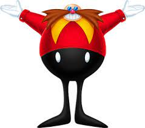

Eggman Facts
Discover interesting facts about the notorious antagonist, Dr. Robotnik (Eggman)!
Dr. Robotnik Facts
Dr. Robotnik, also known as Eggman, is
Sonic's
arch-nemesis and the main antagonist in the Sonic series.
He is a mad scientist with a goal of world domination and capturing innocent animals to power his robots.
Dr. Robotnik is known for his distinctive mustache, round body, and red attire.
His first appearance was in the game "
Sonic
the Hedgehog" released in 1991.
Eggman often pilots various machines, including the iconic Eggmobile.
Despite his villainous nature, Dr. Robotnik has occasionally teamed up with
Sonic
against greater threats.
